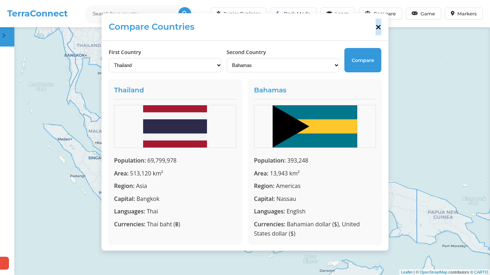
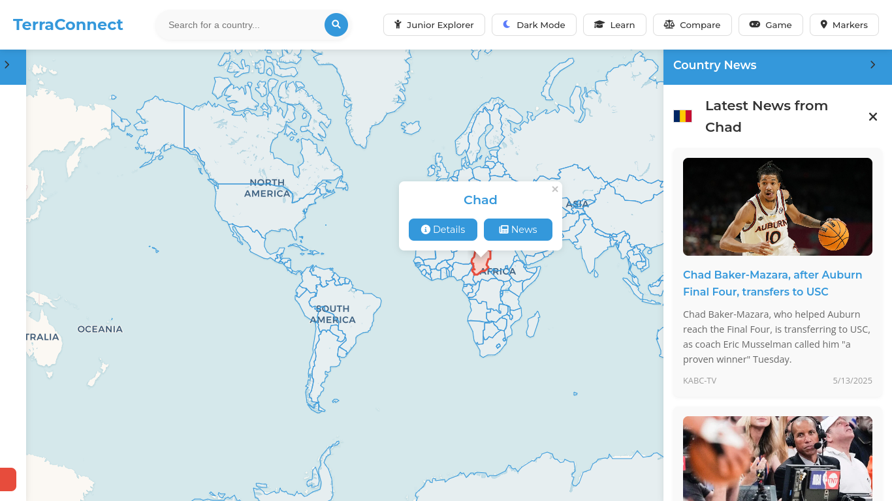
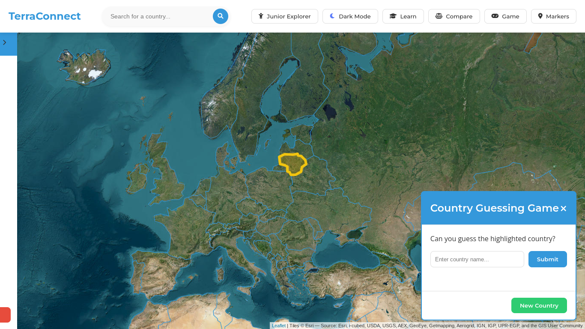
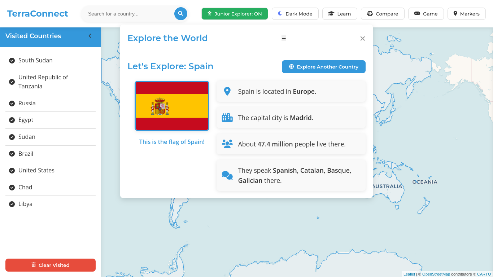

TerraConnect: Global Interactive News Map
TerraConnect is a web application that blends interactive geography exploration with real-time data, and computer/data science using Leaflet.js, REST Countries API, Wikipedia, and GNews. It features accessible UI/UX design, gamified learning tools, and educational modes to make global exploration exciting and informative for all ages.
As a young child, I was always fascinated with Geography and world maps. I would spend hours on google maps strolling through different countries and environments. I always wished there was a specific app that could tailor to young students as passionate as I was. That is why a big component of TerraConnect is education and specifically to young learners.
Key Features
🌍 Interactive World Map
Built using Leaflet.js, the map allows users to click any country to view instant Wikipedia summaries, live GNews articles, and even play games. Map boundaries are sourced via GeoJSON and visually enhanced for accessibility and responsiveness.

🧭 Country Comparison Tool
Compare any two countries side-by-side using REST Countries API data. Users can view statistics including population, area, capital, currency, and languages in a clean visual layout.
📰 Live News Feeds
Each selected country shows current headlines via the GNews API, tailored by country name. News appears in a right-side panel with error fallback and visual loading states.
Live News only accesible to adults. When the Junior Explorer mode is on, News is disabled! Grown-ups only!
🎮 Country Guessing Game
Highlighted country on the map—can you guess its name? With localStorage tracking and color-coded feedback, this mode makes learning geography interactive and addictive.
🧒 Junior Explorer Mode
Designed for younger users, this mode offers a simplified UI, removes the news feed, and enables kid-friendly map popups with learning buttons. Great for younglings!
📚 Learn Feature
Explore each country's culture, region, flag, capital, population, and language in a draggable popup modal with animations. Includes a built-in mini-map showing where the country is located. Designed primarily for young kids, although accesible for all ages!
🌙 Dark Mode Toggle
Full dark theme with custom CSS variables. Automatically adjusts contrast, borders, and hover states for better accessibility and screen fatigue reduction.
📌 Visited Country Tracker
Your clicked countries are saved using localStorage and shown in the left sidebar. Includes a clear-all button and responsive styling.
📈 Development Timeline
- Week 1: Project proposal, wireframes, tech stack finalized.
- Week 2: Built Leaflet map with basic GeoJSON borders.
- Week 3: Wikipedia integration with modal UI.
- Week 4–5: GNews API, game logic, localStorage tracker.
- Week 6–7: UI polish, dark mode, accessibility passes.
- Week 8–10: Miminal Viable Product and demo videos
- Week 10: Comprehensive bug sweeps & error‑state handling.
- Week 11: Accessibility audit & ARIA label enhancements.
- Week 12: Cross‑browser video support & performance tuning.
- Week 13: User testing feedback & stretch‑feature tweaks. Added learn feature
- Week 14: Feature lock, news‑bug fixes, portfolio polish, Shark Tank pitch prep.
- Week 15: News feature troubleshooting, UI repairs, homepage bugfixing, and final stability improvements.
- Week 16: final UI fixes, added learn feature
- Week 16: UI and bug fixes, added Junior Explorer feature
- Week 17 & 18: Presented my final project!
🛠️ Showcase of Development
Watch how the project evolved from a simple map to a rich educational platform.
Initial MVP video outlining UI structure and core functionality.
Mid-phase demo showing game mechanics, feature progression, and UI polish.
First visual prototype showing early map interaction and Wikipedia popups.
🎥 Final Project Video
This video showcases the polished, final version of TerraConnect in full action:
📦 GitHub Repository
View source code and full documentation here: github.com/kalspas0528/TerraConnect